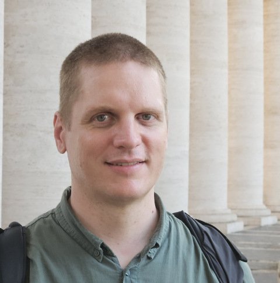

Répássy László
digitális kultúra és matematika szakos tanár
SZÓKRATÉSZ: Ne hidd, hogy én csak akadékoskodni akarok, de úgy érzem, hogy még nem találtuk meg a válasz a te kérdésedre. Most már mindketten jobban látjuk, mint mikor ide leültünk, hogy mi is a matematika, és milyenfajta tevékenységet végez a matematikus, de arra a kérdésre, hogy ennek mi a célja és értelme, tulajdonképpen még nem válaszoltunk semmit.
HIPPOKRATÉSZ: Ha jól meggondolom, igazad van. Engem már az is megnyugtatott, hogy megértettem, mi az oka, hogy a matematika tanulmányozása útján biztos tudásra tehetek szert. Úgy érzem, hogy ennek a csodás világnak a tanulmányozása meghozná nekem azt a jóleső érzést, amit eddig semmiben sem találtam meg: hogy van valami, amiben nincs okom kételkedni. Most, hogy azt is megértettem, hogy a matematika világa, ha nem is úgy, mint a kövek és fák, de a maga módján szintén létezik, tőlem függetlenül, még jobban megnyugodtam. De valóban: mi a célja annak, hogy ezt a világot kikutassuk? Nem úgy érnénk leggyorsabban célhoz, ha most az egyszer szakítanál a módszereddel, és te válaszolnál erre a kérdésre? Én ugyanis úgy érzem, nem vagyok erre képes.
SZÓKRATÉSZ: Még ha tudnék is válaszolni egyedül, akkor sem tenném ezt meg, mert kevés hasznod lenne belőle. Az ember csak azt érti meg, amire maga jön rá; amit készen kap, anélkül, hogy lélekben megdolgozna érte, az egyik fülén be, a másikon ki. Olyan ez, mint a növények öntözése: a növény nem élhet víz nélkül, de nem sokat ér azzal a vízzel, amit a leveleire öntenek, az lepereg róla; csak azt a vizet képes igazán felhasználni, amit a gyökerein keresztül maga szív fel.
Programjaim
Légzőgyakorlatok (nem csak) érettségizőknek
Rövid gyakorlatok a dolgozat vagy az érettségi előtti izgalom oldására és a figyelem visszanyerésére.
Karinthy Frigyes: Tanár úr kérem (PDF)
Humoros jelenetek a diákéletről: felelés, elkésés, a rossz bizonyítvány magyarázása. Több mint száz éve íródott, mégis rá lehet ismerni benne a saját iskolai napjainkra.
Rényi Alfréd: Dialógusok a matematikáról (PDF)
Három képzelt beszélgetés arról, mi a matematika, mire jó, és miért ez a természet nyelve. Szókratész, Arkhimédész és Galilei szólal meg bennük, képletek nélkül.
Rényi Alfréd: Levelek a valószínűségről (PDF)
Négy képzelt levél, amelyet Pascal ír Fermat-nak arról, mi is a valószínűség. Olvasmányos bevezetés a véletlen matematikájába.
Péter Rózsa: Játék a végtelennel (PDF)
A számolástól a végtelenig vezet, közérthetően és sok játékossággal. Azoknak is szól, akik úgy érzik, a matematika nem nekik való.
Valpola Ráhula: A Buddha tanítása (PDF)
Világos, tömör bevezetés a Buddha alaptanításaiba: a négy nemes igazság és a nyolcrétű ösvény. Az 1959-es könyv eredeti szövegekre támaszkodik, és előismeret nélkül is érthető.
Mingyur Rinpocse: Életöröm (könyvesbolt)
A meditáció alapjai közérthetően, a tibeti hagyományt az idegtudomány eredményeivel összekapcsolva. A szerző arról is ír, hogyan küzdötte le gyerekkori pánikrohamait.
Esti matek
Az esti osztály matematika 9. anyaga: heti haladás, házi feladatok, felszerelés és követelmények. Az Esti matek oldal megnyitása
Linkek
- Békásmegyeri Veres Péter Gimnázium: itt tanítok informatikát és matematikát.
- Tempus Felnőttek Általános Iskolája és Gimnáziuma: itt tanítom az egyik esti osztályt, az órák anyaga az Esti matek lapon van.
- Projekthét: Játékfejlesztés Python programozási nyelven
Tanulmányaim
- ITOOK 2026. Informatikatanárok Országos Oktatásmódszertani Konferenciája.
- 2026. Eötvös Loránd Tudományegyetem, matematikatanár.
Levelező tagozat, kitüntetéses oklevél - 2025. Eötvös Loránd Tudományegyetem, informatikatanár (digitális kultúra tanára).
Levelező tagozat, kitüntetéses oklevél - 2020. Széchenyi István Egyetem, gazdaságinformatikus (MSc).
Levelező tagozat. Diplomamunka: Vásárlási szándék előrejelzése adatbányászati módszerekkel - 2015. Szegedi Tudományegyetem, programtervező informatikus (BSc).
Levelező tagozat. Szakdolgozat: Nyílt forráskódú videó lejátszó alkalmazás - 2000. II. Rákóczi Ferenc Gimnázium, Budapest, érettségi.
Felnőttoktatási tagozat, levelező osztály